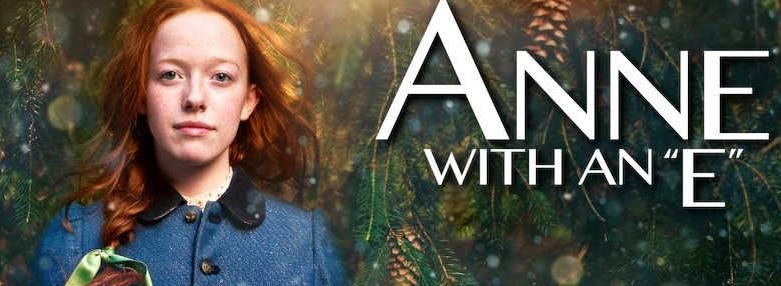

Depois de treze anos sofrendo no sistema de assistência social, a orfã Anne é mandada para morar com uma solteirona e seu irmão. Munida de sua imaginação e de seu intelecto, a pequena Anne vai transformar a vida de sua família adotiva e da cidade que lhe abrigou, lutando pela sua aceitação e pelo seu lugar no mundo.
A série é inspirada na obra classica da literatura infantil, Anne of Green Gables da Lucy Maud. Anne With an E é basicamente uma história dramatica na qual acompanha o amadurecimento de uma garota de fora que, infrenta inumeros desafios, lutando pelo amor e aceitação de todos. A série se passa no final da década de 1890, com uma jovem orfã, que passou uma infancia abusiva passando de orfanatos e casas de estranhos, sofrendo muito por ser orfã e por sua aparencia.
Anne With an E(Anne com E)ganhou o Canadian Screen Award de melhor série dramatica de 2017 e 2018 abordando varios temas polêmicos como:homofobia, racismo, religião, desigualdade, orfandade, questões sociais, liberdade de expressão e bullying
ELENCO